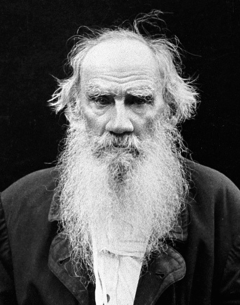

The Death of Ivan Ilyich, 1886
Tolstoy is considered the greatest Russian writer of prose fiction. He was born into a family of Russian aristocrats. His mother died when he was 2. (Many of our writers lose their mothers at any early age.) Tolstoy always maintained a special connection with children, especially children on his family estate, whom he wanted to educate based on ideas from Rousseau. As a writer, he also gift of seeing things with the freshness of a child. He was a robust man and a restless soul. Unlike Flaubert, who was a bachelor, Tolstoy married in 1862, was father of 13 children, and found temporary happiness and wise management of the family estates. Between 1860 and 1876, Tolstoy wrote the two works he is most known for War and Peace, and Anna Karenina, which is widely considered a response to Madame Bovary. (What if divorce were possible for Emma? What makes a happy marriage? Like Madame Bovary, this novel has been made into a film several times. See one and write about it for extra credit or write about two as a term paper project, Topic C.)
The date 1878 is significant, though. This is when Tolstoy had a two-year spiritual crisis and conversion that transformed his life and his view of art (See his Confession). He rejects his earlier works, considered the world's best. He also sacrifices family life and his literary career to become a sort of preacher and seer or visionary He develops his own anarchic version of Christianity. He is excommunicated by the church. His spiritual transformation and dream of a simple, saintly life leads him to the point where he sets off from his home as a pilgrim in his 80s and dies in the waiting room of railway station. (For an excellent cinematic treatment of his last days, see The Station.) Like Voltaire, he protested social injustice. In particular, Tolstoy had a huge impact through his belief in non-violent social protest on activists like Mahatma Gandhi and Martin Luther King, Jr.
There are some things Tolstoy shares with Flaubert: his respected stature in literary history, the subject matter that fascinates him, his rigorous examination of every day life. In The Death of Ivan Ilyich we've moved up the social ladder from the Bovarys but the middle-class mentality is still firmly in place. Ivan Iliych (John Smith in English) is an Everyman. For example, we see that the traits in Tolstoy attacks in this story: selfishness, insensitivity, hypocrisy, being interested only in oneself, are the same that Flaubert attacks in Homais and Rodolphe. Like Flaubert, Tolstoy is fascinated by disease and delivers a graphic, documentary-like portrayal of death. Also like Flaubert, he interested in the inner life of his characters; the two are masters of psychological realism. Tolstoy succeeds even more than Flaubert as the absent narrator. We don't notice him at all. His characters come to life, despite their strange names, and as do the objects in his story, such as the hassock in the first chapter of our story.
1330. We begin as always with the title: The Death of Ivan Ilyich. What's strange about it? Usually when you talk about someone you talk about their life, not their death (Biography=literally, life writing). But this story has death right in the title! Furthermore, the story begins not with a character's schooling as in Madame Bovary or Candide, but with a funeral! This is one of the most painful stories in the world to read. Tolstoy does not mask the dreadfulness of dying. Instead it is drawn out and we are not spared emotional or physical pain. [Personal note from Dr. B: I first read this story 20 years ago when my father was dying of cancer. It was the only thing I read, fiction or nonfiction, that gave me insight into what my father might be going through. I will forever be grateful to Tolstoy and Ivan for that.]
Normal chronology:
1840 -> 1882
Birth -> schooling -> career-> marriage-> death-> funeral
1840--------------------------1857------1882
Chronology of
The Death of Ivan Ilyich
Funeral -> birth-> schooling ->career ->marriage ->death
1184 Chapter 1 takes place the afternoon and evening of his funeral, Chapter 2 covers his education, marriage and first 17 years of his career, and the third has him moving to the house where his accident takes place. The rest of the story is about his illness and death. Why begin a story with someone's death? One answer: to change the reader's orientation from what happens to how it happens. We don't ask will he die, but how he will dies and how he will come to terms with his own death. And just like Charles Bovary's death, there remains a mystery. Is Tolstoy writing about a medical or physical illness? Or an emotional, spiritual or metaphysical illness? Is this a real disease or a symbolic disease? (Or both?)
Chapter 1: The Funeral
The setting is the Law courts. Like The Queen of Spades, the first chapter is apart from the rest and introduces a group of characters. This first chapter is
presented through the eyes of Peter Ivanovich, one of Ivan's oldest friends. But Tolstoy will have us questioning the nature of friendship in the professional middle class.
1331: "Gentleman, he said, Ivan Ilyich has died…in the afternoon." We note the formal names and language here: profound sorrow, beloved husband. Is this serious or ironic? Ivan's illness is presented mysteriously from the start: said to be incurable. Tolstoy is careful to show us both the careful and correct outward behavior of the characters and acquaintances and their inner thoughts which are horrifyingly self-serving.
1331: So on receiving… changes and promotions it might occasion among themselves or their acquaintances. Their self-centeredness is striking! Is this a whole nation of Monsieur Homais? Their main concerns are what profit might accrue them from Ivan's deathand how it inconveniences them. [Dr. B: My emphasis in bold throughout on key words/themes.]
1331: Each one thought or felt…very tiresome demands of propriety by attending the funeral service and paying a visit of condolence to the widow.
1332: The butler's assistant, Gerasim, stepping lightly…sick nurse. Here the reader is introduced to an important character Gerasim who is first described as butler's assistant and then duty as sick nurse. He is the one character in the opening chapter who doesn't fit in. Of course, Ivan doesn't fit in since he is dead, but that's another matter. Contrast the ease with which Gerasim does his duties and the awkwardness of Peter as he tries to figure out how to behave and what rules of social propriety to follow.
1332: The dead man lay, as dead men always lie… when he was alive. How very strange is to have the very first description of main character's and body language when he is dead. In fact, count the number of times Tolstoy uses the words connected to the binary opposition dead/ alive.
1333: The expression on his face…or at last not applicable to him. This look of reproach and warning on Ivan's face and the fact that Peter thinks it is not applicable to him is essential to our interpretation of the story.
As in The Queen of Spades, we see the importance of playing cards in Russian middle-upper class society. Peter Ivanovich not only gives up his nap but might have to give up his bridge game. This is what upsets him on the day of the funeral his "best friend" is mourned. Worse, he is cornered by the widow in the very drawing room that Ivan helped to design. [drawing room: a room in a large private house in which guests can be received and entertained. ORIGIN mid 17th cent. (denoting a private room attached to a more public one): abbreviation of 16th-cent. withdrawing-room 'a room to withdraw to.'New Oxford American Dictionary, 2nd Edition © Copyright 2005-2007 Apple Inc.]
1334 Tolstoy offers us a little bit of comic relief as Peter sits on a rebellious hassock [reminding me of the living furniture in Disney's Beauty and the Beast, and Ivan's wife gets her shawl stuck on a table]. Tolstoy gets serious, though, in the first long speech by the widow, Praskovya Fëdorovna Golovina. We will call her PF in class. For more information about how Russian names work, see pdf on Russian names in this story.
"He suffered terribly the last few days…Oh, what I have suffered!" PF's reaction is shockingly selfish, just as the thoughts of Ivan's friends were! Just as Candide's narrator gives us distance to keep us from feeling things as tragic and Flaubert keeps his characters unsympathetic rather than admirable, here we see two characters making themselves distant from Ivan's death; just as reader does. Notice that when PF talks about Ivan's final days and describing the frightening pain that went on for three days, she swtiches from the pain he suffered to the discomfort that it caused her.
I have also highlighted the word terribly, becasue it will become a key theme in the story. On the next page, we see "Oh, Peter Ivanovich, how hard it is! How terribly, terribly hard!"
As in Madame Bovary, things quicly boil down to the question of money. The chat the widow wants to have with Peter is about trying to get more money out of Ivan's pension. Her greed is even more disturbing than that of the lawyers who were trying to figure out how his death would advance their careers. We also meet the rest of the family: the angry daughter, offended young man, sad but suspect young boy. Keep in mind that these characters are all presented through Peter's eyes.
1336: Unlike Flaubert, who devoted an full chapter to Emma's funeral, here Tolstoy summarizes the entire service in one line: "The service began: candles, groans, incense, tears, sobs." Such enconomy of detail! Next, in contrast with Peter's uncomfortable awkwardness regarding how far to bow or whether to cross himself, Gerasim not only exudes physical well being (in contrast with his dead master) but has a clear sense of purpose (unlike the funeral attendees): There was no one in the anteroom…readiness for what he had to do next.
Chapter 2: Simple, ordinary and terrible
1336 The opening line is perhaps the most surprising and devastating of the story: Ivan Ilych's life had been most simple and most ordinary and therefore most terrible.
How can simple, ordinary, and terrible be combined? This is something to keep in mind for the rest of the story.
We must ask what Tolstoy means by terrible here, though we won't be able to answer until we finish the story.
ter·ri·ble–adjective
1. distressing; severe: a terrible winter.
2. extremely bad; horrible: terrible coffee; a terrible movie.
3. exciting terror, awe, or great fear; dreadful; awful.
4. formidably great: a terrible responsibility (dictionary.com)
We get Ivan's family story: his father was a successful but incompetent government official. Ivan is the middle child and referred to as le phénix de la famille. Just like The Queen of Spades, characters speak in French when they are trying to show how aristocratic and well-educated they are. However, the normally useful Norton footnote misses the point. It is not the "rare bird" allusion that is essential here, but as all Harry Potter fans know, the phoenix is a bird which can regenerate from ashes, a symbol of rebirth. (For an even more correct example, see this article in today's New York Times.) Again, the symbolism of rebirth won't make sense until the end of the story.
1337 Ivan's success at school make him sound like the poster child for progress: capable, cheerful, good-natured, and sociable, but the careful reader notes that something is going wrong:
At school he had done things…troubled at remembering them. Martin Luther King, Jr. has some strong words for those who silence their moral conscience in this way: "Never, never be afraid to do what's right, especially if the well-being of a person or animal is at stake. Society's punishments are small compared to the wounds we inflict on our soul when we look the other way." Instead, Ivan is drawn to high society as a fly is drawn to the light, and he substitutes his own morality for their own. This turns out to be a fatal error.
…hung a fashionable medallion inscribed respice finem on his watch-chain… Again, the Anthology gives you the translation ("regard the end"), but not the significance of this motto. This poem does:
Respice Finem
MY soul, sit thou a patient looker-on;
Judge not the play before the play is done:
Her plot hath many changes; every day
Speaks a new scene; the last act crowns the play.
Francis Quarles (1592-1644)
In other words, you should think about "regard the end" and think about how you will be judged by God at the end of your life. Ivan is taking a dangerous path here, just as Hermann did when he chose the Countess' room rather than Lisaveta's.
1338: Ivan rises through the ranks and becomes an examining magistrate. He enjoys the power of passing judgment but he does this by eliminating all details and all compassion from his work. But now…prescribed formality.
In the kind of normal life portrayed in realist fiction, the next stage is marriage. How does Ivan decide on a wife? Is love the principal consideration?
1339: To say that Ivan Ilych married because… highly placed of his associates. Ivan lets the opinions of his higher-ups determine whom he marries.
There is a clear indication that something is very wrong here in the way Ivan thinks life should be: easy, agreeable, gay and always decorous. When Ivan's wife first becomes pregnant, something changes in him.
1339: The preparations for marriage…unexpectedly showed itself. In fact, life is not always easy, agreeable, gay and always decorous but sometimes new, unpleasant, depressing, unseemly. Ivan rejects this reality and shows no sympathy for his wife. Instead he Ivan responds by distancing himself, getting more involved in his career as his marriage disintegrates into quarrels. This is the beginning of what I call the irritability disease, which will take hold of Ivan in the chapters to follow.
1340: As his wife grew more irritable…ambitious than before. Side note: Although Ivan is far from a model father, we cannot blame him for the early deaths of his children. In this time period, child mortality was very high.
In the period before 1750, surviving childhood was problematic. Infant mortality was high everywhere; depending on time and location, between 20 and 25 percent or more of babies died before their first birthday. By the early 1800s, infant mortality in France, and probably England, had dipped below the 20 percent level, rates not reached in China and India and other low income developing nations until the 1950s. For Europe, North America, Australia, and New Zealand, this rate is now under one percent, but remains at 4 percent in China, 6 percent in India, and 9 percent in Africa (World Resources Institute 1999 and UNDP 2000).
As this chapter closes, think about how Ivan's life is already simple, ordinary and terrible. We are not frightened yet, but he will be soon.
Chapter 3: The Stumble
1341. 17 years pass! The story moves quickly now. Something changes in 1880: an unanticipated and unpleasant occurrence. We already know that Ivan doesn't like things that are not easy, agreeable, gay and anything unexpected. At first it sounds like simple chance that Ivan is passed up for a promotion, but we know that in art, there's no such thing as chance. Ivan is outraged by the fact that no one takes this first professional stumble as seriously as he does: what was for him the greatest and most cruel injustice appeared to others a quite ordinary occurrence. Ivan's selfishness is confirmed by this reaction. He doesn't recognize that he behaves as callously as he accuses others of doing.
1341: In the country, without his work…energetic measures. To save money, the family goes to the country and Ivan experiences ennui for the first time. Why the French word? You need a comfortable bourgeois life to experience existential boredom. Then just as abruptly, his fortune turns. Ivan manages to reverse his bad luck. He gets a new job with much more money and moving expenses. So he thinks his bad luck, the stumble, as he puts it, is behind him, when actually it is ahead of him.
1342: Ivan Ilyich saw with delight… after a stumble, his life was regaining its due and natural character of pleasant lightheartedness and decorum.
Ivan decides to get very involved in the decoration of his new house. Why? First of all, he is obsessed with luxury and appearing wealthy, just like Emma Bovary. This is essential to his idea of progress which Tolstoy will gradually undercut. Secondly, Ivan wants to control his life so that it is always easy, agreeable, gay, but since he can't control his life, he settles for creating the perfect drawing room.
Ivan Ilyich himself superintended the arrangements… when it was ready.
1342-43: Instead, here comes the second stumble: He was so interested… he made a false step and slipped…saw it. Ivan is such a perfectionist and control freak that he wants to show the hired worker how to do it right. The consequences are inevitable, although Ivan is in characteristic denial, insisting he feels fifteen years younger. Instead, the irritability disease reappears.
1344: Tolstoy openly critiques Ivan's accomplishment here. We speak of "keeping up the Joneses." For Tolstoy, we might speak of "keeping up with the Golovins": In reality it was just what is usally seen in the houses of people of moderate means who want to appear rich, and thereore only succeed in resembling others like themselves…
1344: Ivan Ilyich spent his mornings…(Every spot on the tablecloth or on the upholstery, and every broken window-blind string irritated him. He had devoted so much trouble to arranging it all that every disturbance of it distressed him) …easily, pleasantly, decorously. This passage is a perfect example of form and content coming together. Tolstoy is describing Ivan's inability to reflect inwardly about his unhappiness, because he insists on things being visually perfect and pleasant. But life isn't like that! Like Emma, Ivan doesn't look beneath the glittering surface. Secondly, note how Tolstoy chooses to put the explanation for Ivan's distress in parentheses, because Ivan refuses to admit it! It's the formal correlate of denial. Just as Ivan tries to hide from the truth, Tolstoy hides that same truth in a parenthetical comment. Meanwhile, the family pursues their delightful upper middle-class life.
1346: So they lived, and all went well, without change, and life flowed pleasantly. Ivan has become what one critic calls "a virtuoso of alienation and detachment". His family joins in the illusion, which will ultimately prove no more real or satisfying than any of Emma Bovary's.
Chapter 4: The Disease
The reader begins to see everything in terms of health. Typically, Tolstoy begins his chapter with a positive statement and then proceeds to undercut it with great ironic skill.
1346: They were all in good health. It could not be called ill health if Ivan Ilyich sometimes said that he had a queer taste in his mouth and felt some discomfort in his side.
The discomfort in his side takes us back to the second stumble in Chapter 3, which will force Ivan to reconsider his idea of progress. The queer taste in his mouth is an example of Tolstoy's genius for detail, in this case medically accurate detail. This change in taste is often associated with cancer, in modern times, to the point where one medical expert/literary critic has diagnosed Ivan with cancer of the secum! Yet, I would argue that the disease is real and symbolic at the same time.
One interesting feature of the irritability disease is that it is contagious. Ivan first caught it from his wife when she was experiencing the normal symptoms of pregnancy and Ivan chose to spend more time at work rather than show her compassion. The irritibility disease, then, creates a vicious cycle, uniting husband and wife in a dance of bitterness and resentment.
1346: Having come to the conclusion that her husband…increased his irritation also.
PF insists on him going to the doctor: that is the proper thing to do when one is ill. Any concerns the reader has about the way Ivan does his job (did he ever care about justice? or was it all about his enjoyment of power?) is made clear when Ivan receives the same treatment from the doctor that he gave to those before him in court:
1347: All this was just what Ivan …matter of such importance. He never get a firm diagnosis. The reader is shown the limitation of the positivist, rational approach—what seems like objectivity to the person in power comes across as indifference to the victim, whether he's a patient or a defendant. The doctors do not know what is wrong with Ivan, and to cover up their lack of knowledge, they are cold and unsympathetic, just as Ivan was when PF first became pregnant, and as he was in the courtroom. Judge not, that ye be not judged. Matthew 7:1.
1348: The pain did not grow less… Yet despite this he was continually consulting them. The disease violates Ivan's sense of order and progress. He visits other specialists and starts looking into alternative treatments.
1349: There was no deceiving himself, something terrible, new, and important…regardless of anything he said or did. Tolstoy begins to paint a picture of Ivan's illness that gives equal weigh to the physical and the socio-emotional. How would it be different if his family sympathized with or supported him? But why should they? He never did before for them. And the same is true for his friends.
1350: But suddenly Ivan Ilyich was conscious… Ivan Ilych felt that he had diffused gloom over them and could not dispel it. Ivan's mystery disease has changed from a subtle annoyance to something which actually interferes with his pleasures, especially his bridge game.
1350 They had supper and went away… that his life was poisoned and was poisoning the lives of others, and that this poison did not weaken…whole being. Fresh from Emma's arsenic, how could we miss the theme of poison here? Yes, this is not literal poison, like Emma's. Tolstoy suggests that Ivan's poison is metaphorical AND like the irritability disease, contagious. The chapter ends on a note of total isolation, so different from the romantic solitude:
And he had to live thus alone on the brink of an abyss, with no one who understood or pitied him.
The imagery of the abyss here echoes Flaubert's inversion of of romantic vistas (Caspar's Wanderer above the Mists). Emma was poised near an abyss before something devastating was about to happen. On the other hand, Ivan's loneliness and alienation looks ahead to the existentialists. The concept of the progress of the Industrial Revolution is also overturned. We can also note that the slow gradual progression of the disease matches Ivan's slow gradual progression towards self awareness.
Chapter 5 Awareness of death
2 months pass and Ivan's healthy brother-in-law comes to visit. Tolstoy very gifted in describing body language, and here we see how body language can be more revealing than words.
1350: He raised his head… Yes, there is a change." Unlike mirrorless Cunégonde, who did not know she was ugly, no one had told her, Ivan's mirror, like the Wicked Queen's in Snow White, tells him an unwelcome truth: The change in him was immense. (1351) The change is confirmed in the chilling words Ivan overhears his brother-in-law say to PF: his wife confirm what Ivan sees in the mirror:
1351: "No, you are exaggerating… Why he's a dead man! Look at his eyes—there's no light in them." Light and dark are potent binary opposites for life and death, and Tolstoy will use them brilliantly here, and then unexpectedly in the final chapter.
As Ivan overhears this death sentence, he also begins to doubt that this is really an issue that will be solved medically, as symbolized by the discussion of vermiform appendix and kidney. It doesn't really matter what the actual diagnosis is: Ivan finally understands that the problem is one of life and death.
1352: It's not a question of appendix or kidney, but of life… dropped candles and candlestick on the floor, and fell back on his pillow. Just as Ivan has no light in his eyes, suggesting his impending death, so he cannot light the candle or even hold on to the candlestick.
The chapter comes to a chilling conclusion (pun intended). 1353: While she was kissing him he hated her from the bottom of his soul… How do you explain why Ivan hates his so much? We'll discuss this more in connection with the second half of the story.
Chapter 6 Death personified
Unless you've taken a class in logic, you are probably mystified by the syllogism Ivan discusses. It may help to know that logic is an essential part of a lawyer's education, and Ivan and his friends are all lawyers, so it makes sense for them to apply logic to their lives. But it's the content of the syllogism that's also at issue. In English, the touchstone syllogism is about Socrates rather than Caius: Socrates is a man. All men are mortal. Therefore Socrates is mortal. But at Ivan's funeral, Peter Ivanovich denies that the warming is applicable to him. All of Ivan's colleagues, like Ivan himself, deny that they will share Socrates' or Caius' fate. We all believe-or at least want to believe-that somehow death will not come to us! We're special!
Ivan's new awareness of death leads him to review his life. Just as none of wants to admit that we will die, none of us wishes to give up the story we know best: that of our lives. Much like Emma or Rousseau, Ivan goes back to his earliest years: He had been little Vanya… (The informal Russian nickname for Ivan.) He rejects the idea that death could be coming to him: 1354: It cannot be that I ought to die. That would be too terrible."
Tolstoy uses a terrific image (the screen) and formatting devices (capitalization and italic) to further probe Ivan's fear of death.
1354: He tried to get back into the former current of thoughts that once had screened the thought of death from him. The screen is a psychologically perfect symbol for repression: we try to protect ourselves from thoughts we cannot process. The screen is also a piece of furniture that we have encountered several times this semester: Candide and Cunégonde first kiss behind a screen (378) and Hermann hides behind one (811) when he's first alone in the Countess's house. [Another great term paper project!]
And to save himself from this condition, Ivan Ilyich looked for consolations—new screens—and new screens were found and for a while seemed to save him, but then immediately fell to pieces or rather became transparent, as It penetrated them and nothing could veil It.
What is It? Why is It capitalized and italicized? Clearly, Tolstoy is personifying something, but whether It is Death (think of the beggar at Emma's death bed) or Ivan's Fear of Death or something else is up to interpretation. It is a force to be reckoned with, that is certain.
1354. Next, Ivan is able to make the connection between his obsession with order, his stumble off the stepladder (a symbol for the progress and career ladder of the upwardly mobile) In these latter days…that drawing room where he had fallen and for the sake of which (how utterly ridiculous it seemed) he had sacrificed his life—for he knew that his illness originated with that knock. He would enter and see that something had scratched the bronze table…
If Madame Bovary didn't mark the end of a romantic view of death for us, Ivan will.
1355: It really is so! I lost my life over that curtain as I might have done when storming a fort. Is that possible? How terrible and stupid. It can't be true! It can't but it is." He would go to his study, lie down, and again be alone with It: face to face with It, And nothing could be done with It except to look at it and shudder. Ivan wishes for a noble death, like a soldier in battle, but he recognizes that his death will not be a noble one. His fear of death becomes his new obsession, as It is repeated over and over in the final paragraph. Tolstoy expects us to notice, of course, and also to think back to the terrible of the first two chapters, as well as the stumble of the third. A master storyteller, he builds a solid structure with his meaningful themes and careful repetitions.
{kind=link}